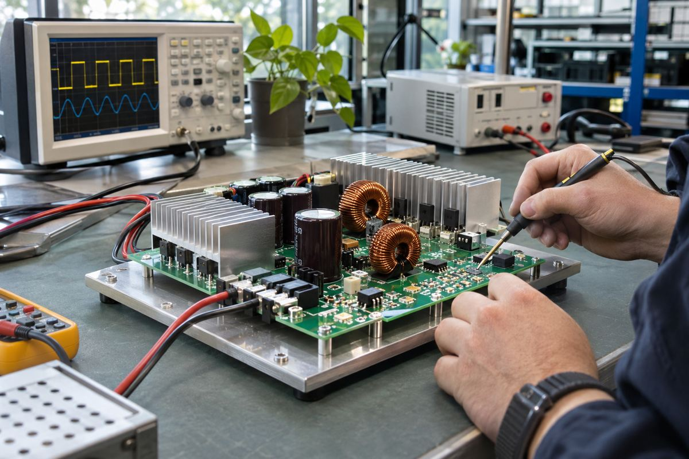

전자기기 / EXPLAINED
비셰이, 400V를 50V로 바꾸는 1.6kW 서버 전원 설계 전시
11월 9일 공개한 전시 계획에는 800V급 변환기와 랙용 단기 전원 보완 회로도 포함됐다.

전자부품 업체 비셰이가 11월 9일 뮌헨 일렉트로니카에서 선보일 서버 전원 회로를 공개했다. 주요 예는 400V 직류 배전 버스에서 50V 중간 전압을 만드는 1.6kW DC/DC 변환기다. 650V급 질화갈륨 스위칭 소자를 활용한다고 밝혔다. 11월 9일은 전시 계획 발표일이고 행사는 현지시간 11월 10~13일이다. 이 회로가 적용된 서버나 부품 세트의 판매일은 발표에 포함되지 않았다.
비셰이는 개별 반도체와 저항·커패시터 같은 수동부품을 만드는 기업이다. 이번에 나열한 것은 자사 부품이 한 전원 시스템에서 어떻게 연결되는지 보여 주는 참조 설계다. DC/DC는 입력과 출력이 모두 직류라는 뜻이다. 배전 버스는 여러 회로에 전원을 공급하는 공통 전압 경로다. 중간 버스의 50V는 이후 다른 전원 단계의 입력으로 쓸 수 있는 값이다. 서버 칩의 코어에 50V를 그대로 공급한다는 뜻으로 해석하면 회로의 역할을 오해하게 된다.
전압을 내리는 구간의 계산
1.6kW가 50V 출력에서 전달된다고 가정하면 전력은 전압과 전류의 곱이므로 전류는 약 32A다. 손실을 제외한 이상적인 계산에서 400V 쪽 전류는 4A다. 이 계산은 같은 전력을 높은 전압으로 전달하면 필요한 전류가 줄어드는 이유를 보여 준다. 실제 장치에서는 변환 손실, 발열과 냉각, 보호 장치의 제약 때문에 소비 전력이 달라진다. 650V는 스위칭 소자의 전압 등급으로, 이 예시의 400V 입력이나 50V 출력을 뜻하는 값과 구별된다.
비셰이는 입력 800V에서 16분의 1 전압을 내는 12kW급 별도 설계도 예고했다. 발표된 비율을 그대로 적용하면 출력은 50V다. 1.6kW 설계와 출력 전압 계산이 같더라도 입력 조건과 전달 전력은 다르다. 더 높은 정격을 고르려면 실제 부하와 케이블, 보호 회로, 냉각을 함께 검토해야 한다. 회사는 48~50V 버스를 짧은 시간 지지하는 전기이중층 커패시터 기반 설계도 소개한다. 이런 부품은 순간 부하와 짧은 전원 변동을 다루는 용도다.
설비 담당자에게 전시의 의미는 서버 성능을 높였다는 점보다 전원을 어느 단계에서 어떻게 변환할지 비교할 사례가 생긴다는 데 있다. 편집부의 해석으로는 같은 출력 용량을 비교하더라도 변환 효율을 측정한 부하 비율과 온도를 맞추고, 냉각에 쓰이는 전력까지 함께 봐야 랙 단위 전력에 미치는 효과를 판단할 수 있다. 정격만으로 운영 비용 절감 폭이나 랙당 실제 처리 성능을 추정할 근거는 부족하다.
정전이나 순간 전압 저하를 검토하는 경우에는 저장 장치가 얼마나 오래 출력을 유지하는지도 별도로 봐야 한다. 짧은 부하 변화에서 전압을 지지하는 보완 회로와 장시간 설비를 가동하는 무정전 전원장치의 요구 조건은 다르다. 이번 자료는 단시간 동작을 소개했으며 지속 시간과 부하의 조합은 공개하지 않았다.
전시 공지에는 이 사례들의 부하별 효율 곡선, 냉각 조건, 실제 서버 검증 결과가 제시되지 않았다. 부스에서 회로 구성을 보는 것과 데이터센터에 적용하는 사이에는 설계 검증과 안전 시험이 남는다. 구매를 검토하는 엔지니어는 전시 이후 회로도와 시험 조건, 조달 가능한 부품 목록이 공개되는지 확인할 수 있다.